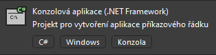

Úvod & Proměnné
V této lekci se seznámíme s proměnými a s tím jak je využívat.
První si musíme ovšem vytvořit projekt. Otevřeme si Visual Studio a klikneme na tlačítko Vytvořit nový projekt:

Poté si vybereme, jaký typ projektu budeme dělat. Zatím začneme v klasické Konzolové Aplikaci:
Nespleťte si to s konzolovou aplikací .net framework. Funkčnost je velice podobná, ale je zde potřeba řešit některé věci navíc a některé naopak nemusí fungovat stejným způsobem.
Pokud dostaneme na výběr verzi .NET rozhraní, vybereme to s dlouhodobou podporou (Long Time Support) a dáme "pokračovat".
Poté se nám spustí grafické rozhraní, kde vidíme kód. Výchozí kód by měl vypadat nějak takto:
Console.WriteLine("Hello, World!");
Tento kód můžeme spustit pomocí tlačítka nahoře:

Poté se nám spustí okno s naším programem, kde můžeme vidět nápis "Hello World!".
Hello, World!
C:\Users\fkomarek\source\repos\playground\bin\Debug\net6.0\playground.exe (process 17816) exited with code 0.
To automatically close the console when debugging stops, enable Tools->Options->Debugging->Automatically close the console when debugging stops.
Press any key to close this window . . .
V tomto kódu můžeme upravit, co se má do konzole vypsat. Aby to ovšem zůstalo jako text, musí to zůstat v uvozovkách, například:
Console.WriteLine("Ahoj, Světe!");
Do tohoto kódu můžeme také napsat matematický příklad, je ovšem potřeba odstranit uvozovky, jinak to bude program brát jako text:
Console.WriteLine(1+2);
Zapisování čísel do kódu tímto způsobem je ovšem docela těžkopádné, proto využíváme tzv. proměnné.
Proměnná je věc, do které můžeme uložit nějakou hodnotu a poté s ní pracovat. Existuje spoustu typů proměnných, ukážeme si některé z nich:
int je číslo (bez desetiných míst)
string je text
Existuje jich mnohem více, ale ukážeme si je později.
První je třeba proměnou vytvořit, uděláme to pomocí kódu int/string [název];
a poté ho nastavíme na nějaké číslo pomocí [název] [hodnota].
Zkusíme si to na následujícím kódu:
int prvniCislo;
int druheCislo;
prvniCislo = 5;
druheCislo = 4;
string text;
text = "Součet dvou čísel je: ";
Console.Write(text);
Console.WriteLine(prvniCislo + druheCislo);
Console.WriteLine(text + " čísel " + prvniCislo + " a " + druheCislo + " je " + (prvniCislo + druheCislo));
Tento kód můžeme trochu zkrátit tím, že výpis obou proměnných dáme na jeden řádek.
Console.WriteLine(text + (prvniCislo + druheCislo));
Všimněte si, že pokud dáte vnitřní závorku pryč
(Console.WriteLine(text + prvniCislo + druheCislo);), program je nesečte,
ale napíše je vedle sebe, protože se k nim bude kvůli tomu stringu předtím chovat jako text a ne jako číslo.
Dále můžeme brát výstup od uživatele a zapisovat ho do proměnné, můžeme si to ukázat na tomto kódu:
Console.Write("Zadejte vaše jméno: ");
string jmeno = Console.ReadLine();
Console.WriteLine("Vaše jméno je: " + jmeno);
Výstup by měl vypadat nějak takto:
Zadejte vaše jméno: Filip
Vaše jméno je: Filip
Pokud budeme brát číslo, musíme ho první převést z textu na číslo:
Console.Write("Zadejte váš věk: ");
int cislo = Convert.ToInt32(Console.ReadLine());
Console.WriteLine("Váš věk je: " + cislo);
Console.WriteLine("Za dva roky váš věk bude: " + (cislo + 2));